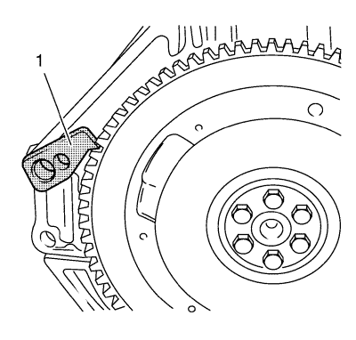
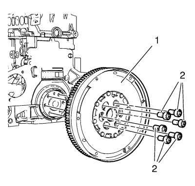
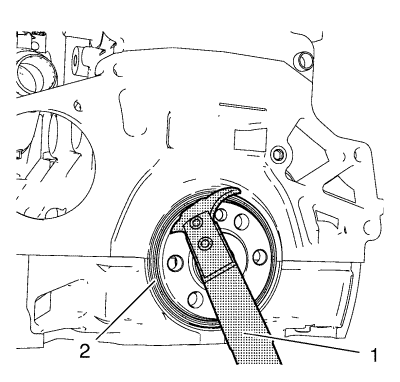
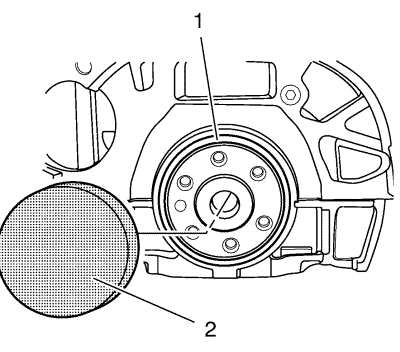

Sustitución del volante motor
Herramientas especiales
| • | EN-45000 Herramienta de desmontaje de retenes de aceite |
| • | EN-48251 Herramienta de montaje de retenes de aceite |
| • | EN-652 Herramienta de bloqueo |
Si desea informarse sobre herramientas regionales equivalentes, consultar Herramientas especiales .
Procedimiento de desmontaje
- Extraiga la caja de cambios:
| • | Desmonte el embrague, consulte
Sustitución del plato de presión del embrague y del disco de embrague : D33 → D16 . |

- Monte la herramienta de bloqueo EN-652 (1) para fijar el volante motor.

- Extraiga los 6 tornillos del volante motor (2).
- Extraiga el volante motor (1).
- Compruebe el retén de aceite trasero del cigüeñal (1) y sustitúyalo si es necesario.

Nota: Asegúrese de no dañar las superficies de sellado.
- Utilice la herramienta de desmontaje EN-45000 (1) para extraer el retén de aceite trasero del cigüeñal (2).
- Desmontar el retén de aceite trasero del cigüeñal (2).
Procedimiento de montaje

- Utilice la herramienta de montaje EN-48251 (2) para instalar un retén de aceite trasero del cigüeñal nuevo (1).
- Monte el NUEVO retén de aceite trasero del cigüeñal (1).
- Monte el volante motor (1).
Nota: Limpie la rosca antes de meter el tornillo con la masilla de fijación (color rojo). El tiempo máximo de montaje con la comprobación de par es de 10 minutos.
- Monte los 6 tornillos del volante motor (2).
- Monte la herramienta de bloqueo EN-652 (1) para fijar el volante motor.
Precaución:Consulte Precaución con las fijaciones en la sección Prólogo.
- Apriete los 6 tornillos del volante motor a 105 N·m (78 lib. pie).
- Monte el convertidor de par. Consultar Montaje del convertidor de par .
- Monte la caja de cambios. Consultar
Sustitución de la caja de cambios : 1.6L LDE, LXT, LXV y 1.8L 2H0 → 2.0L Diésel LLW .
- Monte la caja de cambios:
| • | Monte el embrague, consulte
Sustitución del plato de presión del embrague y del disco de embrague : D33 → D16 . |
| © Copyright Chevrolet. Reservados todos los derechos |